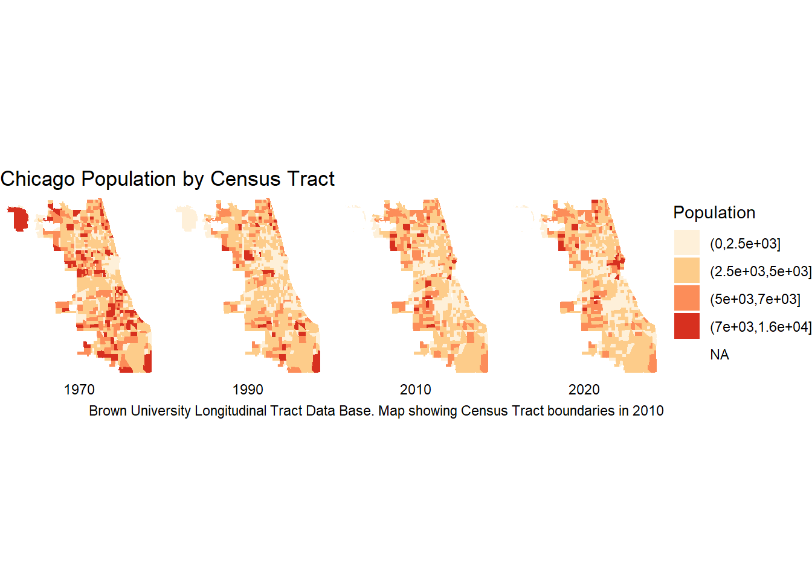

library(sf)
library(tidyverse)
library(leaflet)
library(osmdata)
library(scales)Describe neighborhood dynamics with 
11.S954 Applied Data Science for Cities
Overview
Geospatial data analysis figures prominently in cities and urban analytics. In this lab, we will introduce essential tools and processes to facilitate spatial analysis, along with demonstrating how to obtain and integrate data from open data sources.
To put things into context, we are going to describe the walkable environment in Boston neighborhoods. Walkability is regarded as whether characteristics of the built environment may or may not support residents to walk for either leisure or access destinations (Leslie et al., 2007). Some studies have further pinpointed several variables within a framework of three D’s supporting walkability: Density, Diversity, and Design (Cervero and Kockelman, 1997, Ewing et al., 2008), and later, five D’s that further include Destination accessibility and Diversity (Ewing & Cervero, 2010).
Components included in the index
Suppose an advocacy group in the City of Boston wants to assess the walkability of neighborhoods in their built environment, and identifies the following indicators to describe the environment:
- Population density,
- Business activities—e.g. retail, restaurants, food—are available within an area,
- Sidewalk coverage (share of block faces with sidewalks)
These indicators can be operationalized as follows:
| Indicator | Measure | Data Source |
|---|---|---|
| Population density | Population per sq.mi. | Analyze Boston |
| Business activities | Number of selected POIs in the neighborhood per 1000 residents | OSM |
| Sidewalk coverage | The total length (ft) of sidewalk per area (sq.ft.) in each neighborhood | OSM |
Calculate areas and lengths
Let’s gather, process data, and calculate these indicators one by one. First, we will need neighborhood boundaries, available on the Boston open data portal Analyze Boston. Let’s navigate to the Boston neighborhood boundaries approximated by 2020 census block groups page. Find the shapefile format and click download to bring the zipped file to your data folder.
Although we can directly click to unzip it, let’s try to do it with R commands.
unzip(zipfile = "data/Boston_Neighborhood_Boundaries_approximated_by_2020_Census_Block_Groups.zip", exdir = "data", overwrite = TRUE)
file.remove("data/Boston_Neighborhood_Boundaries_approximated_by_2020_Census_Block_Groups.zip")Now we have these shapefiles, we will use st_read in the sf package to read them, starting with the neighborhood file:
Reading layer `Boston_Neighborhood_Boundaries_approximated_by_2020_Census_Block_Groups' from data source `D:\00_course prep\ds_s187_s954\data\Boston_Neighborhood_Boundaries_approximated_by_2020_Census_Block_Groups.shp'
using driver `ESRI Shapefile'
Simple feature collection with 24 features and 37 fields
Geometry type: MULTIPOLYGON
Dimension: XY
Bounding box: xmin: 739715.8 ymin: 2908294 xmax: 812981.4 ymax: 2970217
Projected CRS: NAD83 / Massachusetts Mainland (ftUS)neighborhood <-
st_read("data/Boston_Neighborhood_Boundaries_approximated_by_2020_Census_Block_Groups.shp") |>
select(nbh_name = blockgr202, population = tot_pop_al)Notice that this shapefile has population by neighborhood that is ready to use, which is very nice, otherwise we will have to aggregate the census population ourselves.
When we work with shapefiles of different sources, the first step is to check the Coordinate Reference System (CRS). Places can appear differently in shape on maps when different CRSs are used due to the inherent distortions introduced during the process of projection.
st_crs(neighborhood)$epsg[1] 2249This informs us that the neighborhood shapefile is stored in a State Plane coordinate system Massachusetts Mainland, which has an EPSG code 2249. State Plane projections are 1) “projected”, meaning that x and y coordinates are in linear measurements, as opposed to degrees; and 2) are regional datums designed to provide accurate positioning data for North America specifically, as opposed to WGS84, which is a global datum. EPSG code is a standardized shorthand for referencing each CRS. Feel free to navigate to epsg.io and look around.
We can calculate polygon areas using st_area():
neighborhood |>
mutate(nbh_area = st_area(geometry))Simple feature collection with 24 features and 3 fields
Geometry type: MULTIPOLYGON
Dimension: XY
Bounding box: xmin: 739715.8 ymin: 2908294 xmax: 812981.4 ymax: 2970217
Projected CRS: NAD83 / Massachusetts Mainland (ftUS)
First 10 features:
nbh_name population geometry
1 Allston 28621 MULTIPOLYGON (((758525.8 29...
2 Back Bay 19588 MULTIPOLYGON (((771539.2 29...
3 Beacon Hill 9336 MULTIPOLYGON (((774297.4 29...
4 Brighton 48330 MULTIPOLYGON (((754177.9 29...
5 Charlestown 19120 MULTIPOLYGON (((773132.5 29...
6 Chinatown 7143 MULTIPOLYGON (((775639 2953...
7 Dorchester 122191 MULTIPOLYGON (((775867.2 29...
8 Downtown 13451 MULTIPOLYGON (((773867.7 29...
9 East Boston 43066 MULTIPOLYGON (((790148.5 29...
10 Fenway 37733 MULTIPOLYGON (((756955.2 29...
nbh_area
1 41547595 [US_survey_foot^2]
2 15387245 [US_survey_foot^2]
3 7891524 [US_survey_foot^2]
4 76581557 [US_survey_foot^2]
5 51270214 [US_survey_foot^2]
6 3436019 [US_survey_foot^2]
7 219303798 [US_survey_foot^2]
8 21590100 [US_survey_foot^2]
9 181088272 [US_survey_foot^2]
10 42813573 [US_survey_foot^2]The new nbh_area column returns a unit object in square feet, which is consistent with the dataset’s projection. Although we can do basic math operations on unit objects, managing the units incurs memory overhead. Transforming them to simple numeric values is advisable if this information is not necessary to be carried along for the entire analysis.
Using the population information, we can proceed to compute the population per square mile and add this column to the dataset.
neighborhood <- neighborhood |>
mutate(nbh_area = as.numeric(st_area(geometry))) |>
mutate(pop_density = population/(nbh_area/27878400)) Density of sidewalks
From the front page of Analyze Boston, search for “sidewalk”, you will find the Sidewalk Centerline shapefile. Download it to your data folder, unzip it and read it in R. What CRS is this shapefile using?
sidewalk <- st_read("data/Sidewalk_Centerline.shp")Reading layer `Sidewalk_Centerline' from data source
`D:\00_course prep\ds_s187_s954\data\Sidewalk_Centerline.shp'
using driver `ESRI Shapefile'
Simple feature collection with 110031 features and 3 fields
Geometry type: LINESTRING
Dimension: XY
Bounding box: xmin: 742172.1 ymin: 2909272 xmax: 811805.7 ymax: 2969957
Projected CRS: NAD83 / Massachusetts Mainland (ftUS)If we intersect the sidewalk and neighborhood shapefiles, we should be able to calculate the total length of sidewalk segments in each neighborhood. Similar to st_area, st_length is another geometry measurement function and calculates segment length.
In the following code, we are going to:
- intersect the sidewalk and neighborhood spatial objects, i.e. break up line segments at neighborhood boundaries;
- calculate the lengths of sidewalk segments after the intersection;
- convert the units to numeric values;
- group the line segments by neighborhood, summing up the sidewalk lengths within each neighborhood.
sidewalk_data <-
st_intersection(sidewalk, neighborhood) |>
mutate(length = as.numeric(st_length(geometry))) |>
group_by(nbh_name) |>
summarise(sidewalk_length = sum(length)) Say we want to attach the total sidewalk length to our neighborhood data, we can join this information with neighborhood, using their shared attribute name. Recall that operations on attributes do not remove their geometry - but we can explicitly drop it using st_drop_geometry()
sidewalk_data <- sidewalk_data |> st_drop_geometry() |>
left_join(neighborhood, by = "nbh_name") Then we’ll calculate sidewalk density using another pipeline:
sidewalk_data <-
sidewalk_data |>
mutate(sidewalk_coverage = round(sidewalk_length/nbh_area, 3)) |>
select(nbh_name, sidewalk_coverage)At this point, you can remove some datasets that you don’t anticipate using again.
rm(sidewalk)Obtain and process OSM data
For the other nutrition-related variables, we are going to download points of interest (POI) from OpenStreetMap (OSM). By allowing anyone to contribute, OSM enables the real-time evolution of its database and offers convenient options for downloading data through its free Overpass API. In this lab, we will use the osmdata R package, which simplifies download queries without much understanding of the overpass query syntax.
In order to obtain data from OSM, you will need to specify:
- a bounding box
- key-value pairs
The bounding box
A bounding box is like a window of where you want to clip a piece of map. It can be defined by manually specifying two latitude-longitude pairs.
# (lat, lon) of Lower left and Upper right corners
bbox = c(42.22791,-71.19124,42.39698,-70.80449)In most cases, they can be directly identified by character strings.
bbox = 'Boston, MA, USA'
However, recently there seem to be some issues with bbox direct address query. I implemented a workaround here so that we can still obtain a bounding box by entering a place name.
bbox <- sf::st_bbox(nominatimlite::geo_lite_sf(
address = "Boston, MA, USA",
points_only = FALSE)) The key-value pairs
An overpass query opq starts with engaging with the bounding box like this:
q <- opq(bbox)
Following the initial opq(bbox) call, we will build queries by adding one or more features, which are specified in terms of key-value pairs. Here is a complete list of key-value pairs on OSM, in which values can be understood as specific types of places, and keys are their categories.
For example, supermarket stores are categorized in OSM under key=shop, and value=supermarket. So that a query of all supermarkets within the boundary box of Boston can be constructed as follows:
supermarket <- opq(bbox)|>
add_osm_feature(key = "shop", value = "supermarket") |>
osmdata_sf() The retrieved OSM object is a huge list that includes numerous attributes; What we need is an sf object named osm_polygons nested in this list. Let’s extract osm_polygons, then select only the name (and the attached geometry) of this object:
supermarket <- supermarket$osm_polygons |> select(name)We can make a quick plot, zoom in, and check the result.
leaflet() |>
addTiles() |>
addPolygons(data = supermarket)Most of the supermarket locations are there. To prepare for our next step - joining them with our neighborhood dataset, we will do two additional things:
- find the centroids for these supermarket polygons;
- transform its CRS to be consistent with our neighborhood data.
supermarket <-
supermarket |>
st_centroid(geometry) |>
st_transform(2249)Write a function
To streamline this “download - extract - transform” process, we can create a function to extract the specific elements required.
# I name the function "get_osm".
# The inputs are place name and the key-value pair
# The output is a spatial point sf object that stores the centroid of POIs.
get_osm <- function(place, key, value){
bbox <- sf::st_bbox(nominatimlite::geo_lite_sf(
address = place,
points_only = FALSE))
temp <- opq(bbox) |>
add_osm_feature(key = key, value = value) |>
osmdata_sf()
df <- temp$osm_polygons |>
select(name) |>
st_centroid(geometry) |>
st_transform(2249)
return(df)
}Let’s use our function to download more POIs that could describe business activities. Note that this is not an exhaustive list, there may be further relevant points to consider.
restaurant <- get_osm("Boston, MA, USA", "amenity", "restaurant")
fastfood <- get_osm("Boston, MA, USA", "amenity", "fast_food")
retail <- get_osm("Boston, MA, USA", "building", "retail")Calculate the number of POIs by neighborhood
Once the three OSM variables are generated, we can count the number of points within each neighborhood. st_intersects returns a logical value indicating whether the intersection occurs (True - there are points in this polygon, and False - no point is in this polygon). We then apply lengths to the result of st_intersects to count the number of TRUE values, which is the sum of the points that intersect with the polygon.
# The `bind_cols` brings multiple vectors together to make a data frame
osm_data <- bind_cols(neighborhood$nbh_name,
lengths(st_intersects(neighborhood, restaurant)),
lengths(st_intersects(neighborhood, fastfood)),
lengths(st_intersects(neighborhood, retail)),
lengths(st_intersects(neighborhood, supermarket))
)
colnames(osm_data) <- c("nbh_name", "restaurant", "fastfood", "retail", "supermarket")Then we can simply sum them up to have the total number of business-related POIs in each neighborhood, than factor in the population size to normalize the raw count.
osm_data <- osm_data |>
left_join(neighborhood, by = "nbh_name") |>
mutate(poi_density = ifelse(population>0, (restaurant+fastfood+retail+supermarket)/(population/1000), NA)) |>
select(nbh_name, poi_density)Assemble results
Now we can put the three parts of our result (population density, sidewalk coverage, and osm data) in one place. The three datasets we have created share the common attribute nbh_name, so we can perform left_join() on two datasets at a time. But an alternative strategy is to use the purrr package’s reduce() function to combine multiple dataset at one time.
data <- list(neighborhood, sidewalk_data, osm_data) |>
reduce(left_join, by = "nbh_name")We have finally compiled the necessary dataset that incorporates all the indicators we have identified. Now let’s remove intermediary variables in the working environment, keeping only the data and prepare to create the index.
data <- data |> select(-c(population, nbh_area))
rm(list=setdiff(ls(), "data"))Create a composite index
There are many, many different methods to combine variables. We are going to create a relatively simple additive index by adding up our three indicators with equal weights. But before that, we need to standardize our variables to make sure they are at a comparable scale.
Standardize indicators
Since our indicators end up having very different scales, we can’t interpret anything about the magnitude by comparing these values to each other. In many statistical analyses, such as multivariate linear regression, standardizing your data is usually an essential first step to prevent certain variables from dominating the analysis due to their larger numerical values.
Z-score standardization converts data from various distributions into a common unit of measurement, which is the number of standard deviations from the mean. This conversion enables data points, regardless of their original spread, to be expressed in the same way.
A z-score can be calculated by subtracting from a given observation the mean of all observations and then dividing by the standard deviation of all observations. R has us covered here - the scale function does exactly the same thing. Here we use a mutate_at function to perform the same alteration upon multiple variables we select. Take a look at the documentation for mutate_at, the list argument allows you to modify existing columns in place.
score <-
data |>
mutate_at(
vars(
pop_density,
sidewalk_coverage,
poi_density
),
list(scale)
)Specify the directions
High values in indicators may represent beneficial or detrimental conditions - in some cases, higher values are “good”, and in some cases, lower values are “good”. When we are creating an additive index, we can transform values so that they are moving in the same direction by simply switching the sign on the values that need to be reversed (e.g. multiply by -1). However, we don’t need to adjust directions in our case because our indicators move in the same direction (i.e. high value means a more walkable environment).
Aggregate the index
We are finally going to generate our composite index, where standardized values are simply added together. Based upon the table above, Here’s what that would look like:
score <- score |>
rowwise() |>
mutate(
index = sum(pop_density, sidewalk_coverage, poi_density))|>
ungroup()You may have noticed rowwise(). Typically, if we were to ask dplyr to mutate by providing a sum, it would do so by column. rowwise() modifies this and asks for something to happen across a data observation (row) instead of by column.
We could analyze the index value and interpret it as is, but for an index, it’s reasonable to anticipate a value falling within the range of 0 to 100. We can use rescale to put our values into any specified range.
score <-
score |>
mutate(index = rescale(index, to = c(0, 100)))Check the result
We can make a quick map to examine our results. Although, we don’t want to over-interpret our results because any method to evaluate walkability is a difficult one. OpenStreetMap also exhibits issues such as missing names, data availability bias, and inconsistent categorization, etc. This study chose a more pragmatic method to demostrate the capabilities of R in data management and spatial analysis.
ggplot(score) +
geom_sf(aes(fill = index))+
scale_fill_continuous()
Exercise
This exercise will be a self-guided mini research to evaluate the public transportation service (supply) of selected Boston neighborhoods. You will define 3-4 indicators that describe existing public transportation service, formulate a calculation process, then focus on two neighborhoods in Boston to compare your results and evaluate the success (or failure) of your study cases.
You can describe public transportation service by number of bus and rail stops, number of routes, length of bike routes and sidewalks, etc. Note that the primary purpose of this exercise is to practice spatial analysis in R. You should operationalize the metrics in a manageable way and specify indicators that work for you.
Please document your work process and results in a new Quarto Document, and upload your .qmd file and rendered HTML file to Canvas by the end of day, Tuesday, Dec 5.
A quick tip: if you include self_contained = TRUE in your YAML header, you won’t lose the pictures of your html file.